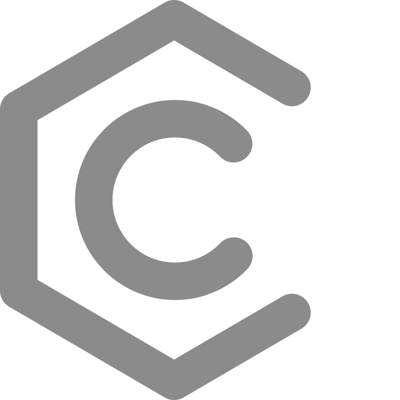
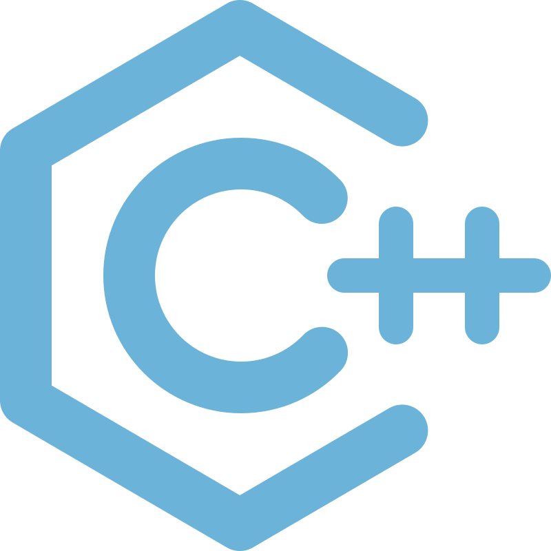
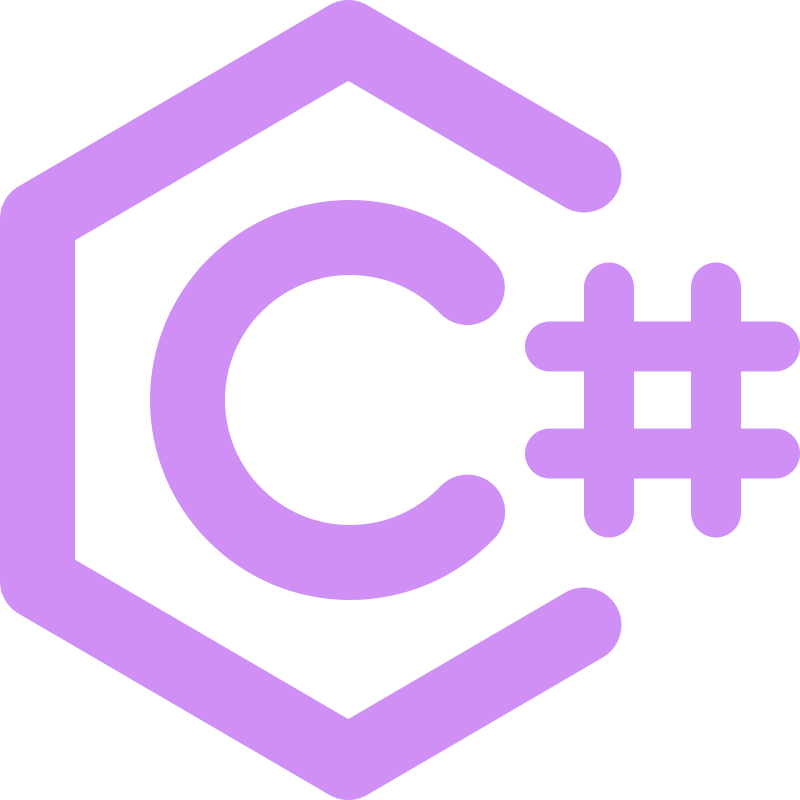
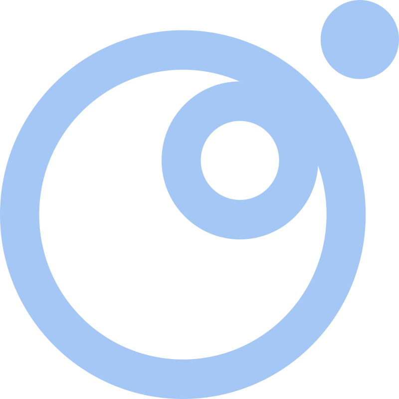
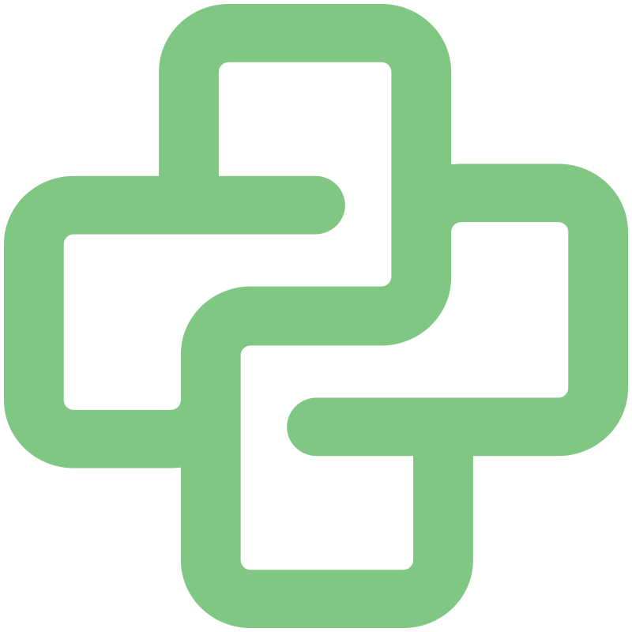
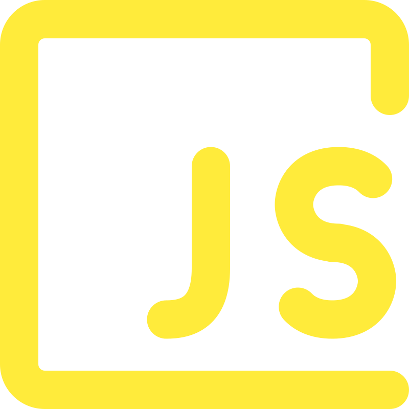

Bem-vindo ao Portfólio de Gotiko
Programador apaixonado por tecnologia, desenvolvimento e inovação. Explore minhas habilidades e os projetos que realizo com dedicação e criatividade.
Minha Jornada
Início da Aventura
Comecei minha jornada na programação com Lua, criando experiências interativas no Roblox. Foi aqui que descobri minha paixão por criar mundos digitais.
Expansão de Conhecimentos
Explorei Python para automação e processamento de dados, descobrindo o poder da simplicidade e eficiência.
Mergulho no Desenvolvimento Web
JavaScript abriu as portas para o desenvolvimento web dinâmico, com foco em Node.js e futuras explorações em React.js.
Programação de Sistemas
C e C++ me permitiram entender a fundo a computação, desenvolvendo aplicações de alto desempenho e jogos.
Desenvolvimento Multiplataforma
C# se tornou minha ferramenta principal para criação de jogos com Godot e desenvolvimento de soluções desktop robustas.
Conhecimentos em Linguagens de Programação

C: Programação de baixo nível com foco em otimização de memória e controle de hardware.

C++: Desenvolvimento de jogos e aplicações de alto desempenho.

C#: Criação de jogos interativos com Godot e desenvolvimento de soluções desktop. Uma linguagem poderosa para múltiplas plataformas.

Lua: Lua me permite criar mundos dinâmicos no Roblox e além. Comecei minha jornada aqui e continuo explorando suas possibilidades.

Python: Automação e processamento de dados. Utilizo Python para criar soluções ágeis e eficientes.

JavaScript: Desenvolvimento web dinâmico com Node.js. Meus objetivos são aprender sobre React.js com está linguagem.